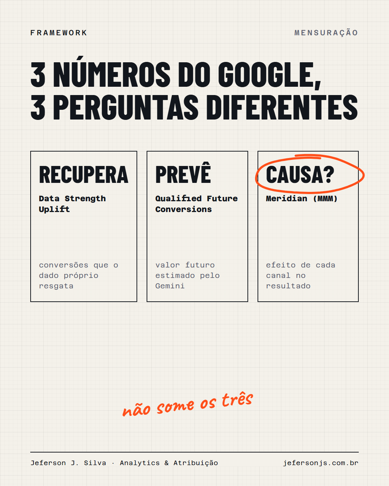

Em 2026 o Google pôs três números novos na mesa de quem decide verba. Parecem medir a mesma coisa. Não medem.
Recuperar, prever e causar conversão são três perguntas diferentes. Misturar as três na mesma reunião é como somar o que cada plataforma atribui e chamar de venda.
Quando construí um simulador de orçamento multicanal, a régua foi uma só: o número oficial da empresa. O simulador fechou entre 94% e 99% dele, canal por canal. Sem isso, nenhuma alavanca na tela teria valor.
John Wanamaker reclamava que metade do dinheiro em propaganda era desperdiçada, e que ele não sabia qual metade. Cem anos depois temos três métricas novas, e a dúvida dele continua precisando de um número que o financeiro reconheça.
Qual dos três você levaria para a reunião de orçamento?
30 minutos, de graça. Entro nas suas plataformas e mostro os três problemas mais críticos de mensuração.
Quero meu diagnóstico grátis →